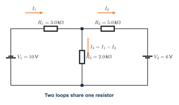
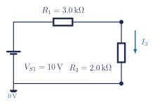
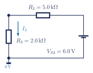
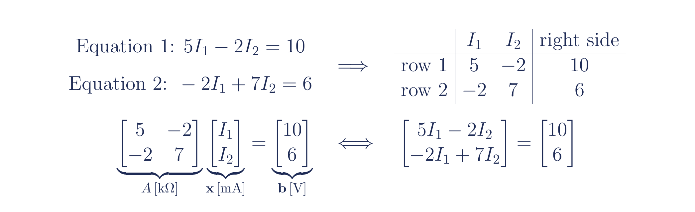

Assignment: From Two Loops to a Matrix
Learning goals
- I can define the current directions in a two-loop circuit.
- I can write one signed KVL equation for each loop.
- I can rearrange both equations into the same variable order.
- I can build \(A\mathbf{x}=\mathbf{b}\) and solve it with NumPy and SymPy.
- I can verify the answer using residuals, substitution, and KCL.
Why this is useful
Two loops share one component, so the current through the shared component depends on both loop currents. A matrix does not replace the circuit reasoning. It organizes the equations after the arrows, signs, units, and KVL equations are correct.
This bridge has two parts. Question 4 is the fully worked teaching example. Question 5 is the independent transfer task: the helper questions reveal the process, but not the completed coefficients, matrix, or currents.
What you will make
Submit one Jupyter notebook showing this complete chain:
arrows two KVL equations standard form \(A\mathbf{x}=\mathbf{b}\) two solver methods verification
Before you start
- Complete Python and NumPy Foundations. You should already be able to run all cells, inspect an array, call a function, read basic documentation, and make an assertion pass.
- Download the printable two-loop-to-matrix guide.
- Download Notebook 3A: From Two Loops to a Matrix.
- Keep your returned Question 4 and Question 5 work available. Use the released Question 4 answer for comparison, but do not copy the released Question 5 answer into the scaffold.
- Choose a Jupyter route:
- Browser route: click OPEN JUPYTERLITE NOW. In JupyterLite, click Upload Files, select
03a-two-loop-to-matrix-bridge.ipynb, and double-click it. Choose Python (Pyodide) if asked. See the step-by-step JupyterLite instructions for saving, downloading, and reopening work. - Local route: run Jupyter locally using WSL, Windows, macOS, or Linux.
- Browser route: click OPEN JUPYTERLITE NOW. In JupyterLite, click Upload Files, select
- Rename the notebook before working:
studentnumber-lastname-kirchhoff-jupyter.ipynbExample: 123456789-Smith-kirchhoff-jupyter.ipynb. Keep the .ipynb ending.
- Grob, Chapter 9: Kirchhoff’s Laws, pp. 264–281
- Problems Manual, Chapter 9
- ElectroBOOM101-008: Lumped Model and Kirchhoff Circuit Laws
- Kirchhoff lesson and worked Question 4
This checkpoint is a computational verification activity. No physical lab is required tomorrow.
Part A: Worked Question 4
Follow the complete example once. Each line performs one algebra move, so you can reuse the method without reusing the numbers.
1. Use Kirchhoff’s Current Law to define the three currents

Kirchhoff’s Current Law at the junction
At the top centre junction:
current entering = current leaving
\[ I_1=I_2+I_3 \]
\[ I_1-I_2-I_3=0 \]
\[ \boxed{I_3=I_1-I_2} \]
Use clockwise mesh currents \(I_1\) and \(I_2\). Define \(I_3\) downward through the shared resistor, as shown. Keep the arrows and the equation \(I_3=I_1-I_2\) visible beside the work.
2. Derive Equation 1 from Loop 1

Turn the circuit into signed terms
\[ +10-3I_1-2I_3=0 \]
Use the printable guide and record each signed KVL term:
| Element | Signed term | Reason |
|---|---|---|
| \(V_{S1}=10\,\mathrm{V}\) | \(+10\) | source rise |
| \(R_1=3.0\,\mathrm{k\Omega}\) | \(-3I_1\) | travel with \(I_1\) |
| \(R_3=2.0\,\mathrm{k\Omega}\) | \(-2I_3\) | travel with the defined \(I_3\) |
Do not replace the resistor-voltage symbols with numbers in one jump. Show the complete chain:
\[ +10-V_{R1}-V_{R3}=0, \]
\[ V_{R1}=I_1R_1=3I_1,\qquad V_{R3}=I_3R_3=2I_3, \]
\[ +10-3I_1-2I_3=0, \]
\[ +10-3I_1-2(I_1-I_2)=0, \]
\[ +10-3I_1-2I_1+2I_2=0, \]
\[ +10-5I_1+2I_2=0, \]
\[ -5I_1+2I_2=-10, \]
\[ \boxed{5I_1-2I_2=10}. \]
The second-last line subtracts \(10\) from both sides. The final line multiplies the complete equation by \(-1\) so the leading coefficient is positive.
3. Derive Equation 2 from Loop 2

Loop 2 travels through the shared resistor against the defined direction of \(I_3\). Its resistor term is therefore positive.
| Element | Signed term | Reason |
|---|---|---|
| \(V_{S2}=6.0\,\mathrm{V}\) | \(+6\) | source rise |
| \(R_2=5.0\,\mathrm{k\Omega}\) | \(-5I_2\) | travel with \(I_2\) |
| \(R_3=2.0\,\mathrm{k\Omega}\) | \(+2I_3\) | travel against the defined \(I_3\) |
Again, begin with resistor-voltage symbols and show one algebra move per line:
\[ +6-V_{R2}+V_{R3}=0, \]
\[ V_{R2}=I_2R_2=5I_2,\qquad V_{R3}=I_3R_3=2I_3, \]
\[ +6-5I_2+2I_3=0, \]
\[ +6-5I_2+2(I_1-I_2)=0, \]
\[ +6-5I_2+2I_1-2I_2=0, \]
\[ +6+2I_1-5I_2-2I_2=0, \]
\[ +6+2I_1-7I_2=0, \]
\[ 2I_1-7I_2=-6, \]
\[ \boxed{-2I_1+7I_2=6}. \]
Multiplying the complete equation by \(-1\) does not change its solution.
4. Build the matrix
State the variable order before entering any coefficients:
\[ [I_1,I_2]. \]

Read each standard-form equation from left to right:
| Equation | coefficient of \(I_1\) | coefficient of \(I_2\) | right side |
|---|---|---|---|
| \(5I_1-2I_2=10\) | \(5\) | \(-2\) | \(10\) |
| \(-2I_1+7I_2=6\) | \(-2\) | \(7\) | \(6\) |
Therefore,
\[ \underbrace{\begin{bmatrix}5&-2\\-2&7\end{bmatrix}}_{A\,[\mathrm{k\Omega}]} \underbrace{\begin{bmatrix}I_1\\I_2\end{bmatrix}}_{\mathbf{x}\,[\mathrm{mA}]} = \underbrace{\begin{bmatrix}10\\6\end{bmatrix}}_{\mathbf{b}\,[\mathrm{V}]}. \]
The matrix multiplication is only a compact way to write the same two row equations:
\[ \begin{bmatrix} 5I_1+(-2)I_2\\ (-2)I_1+7I_2 \end{bmatrix} = \begin{bmatrix}10\\6\end{bmatrix}. \]
Read the top row as Equation 1 and the bottom row as Equation 2. If either read-back equation differs from the boxed KVL equation, fix the matrix before calling a solver.
Use the row-reading cells in Notebook 3A to turn both rows back into equations. Do not continue until they match the two boxed equations above.
5. Solve with numerical linear algebra
Run the NumPy cells using:
A = np.array([
[ 5.0, -2.0], # Equation 1 coefficients
[-2.0, 7.0], # Equation 2 coefficients
])
b = np.array([10.0, 6.0])
currents_mA = np.linalg.solve(A, b)
residual_V = A @ currents_mA - bPrint \(I_1\), \(I_2\), and the two residuals with units. Keep the residual assertion in the code.
6. Solve symbolically
Run the SymPy cells. Keep the exact fractional results visible before converting them to decimals.
I1, I2 = sp.symbols("I1 I2")
equations = [
sp.Eq(5*I1 - 2*I2, 10),
sp.Eq(-2*I1 + 7*I2, 6),
]
exact_solution = sp.solve(
equations,
(I1, I2),
dict=True,
)[0]Calculate \(I_3=I_1-I_2\) symbolically and numerically.
7. Compare and verify
Complete the notebook comparison table:
| Quantity | Original work | Released answer | NumPy | SymPy exact | Agreement and explanation |
|---|---|---|---|---|---|
| \(I_1\) | |||||
| \(I_2\) | |||||
| \(I_3\) |
Then verify:
- Equation 1 by substitution;
- Equation 2 by substitution;
- \(I_3=I_1-I_2\);
- the NumPy residual vector.
Part B: Build Question 5 without being given the matrix
Use your original Question 5 circuit and work through the prompts below. The symbols \(a_{11}\), \(a_{12}\), \(a_{21}\), \(a_{22}\), \(b_1\), and \(b_2\) are placeholders. Replace them with coefficients obtained from your own algebra.
The purpose is to translate a circuit into a system. Complete the two standard-form equations, coefficient table, matrix, and row read-back before comparing currents with the released answer.
B1. Define the currents before doing algebra
Answer these questions in a Markdown cell:
- Which direction did you assign to \(I_1\)?
- Which direction did you assign to \(I_2\)?
- Which direction did you assign to the shared-branch current \(I_3\)?
- Is your shared-current relationship \(I_3=I_1-I_2\) or \(I_3=I_2-I_1\)? Why does it match your arrow?
B2. Rearrange both loop equations one move at a time
For each loop, show all seven lines below. Do not combine multiple algebra moves on one line.
- Write signed KVL using resistor-voltage symbols such as \(V_{R1}\).
- Replace every resistor voltage with \(IR\).
- Substitute your expression for \(I_3\).
- Distribute the resistance coefficient through the bracket.
- Reorder the terms into the variable order \([I_1,I_2]\).
- Combine like terms.
- Move the constant to the right side. If you multiply by \(-1\), multiply every term.
Your final equations must have this form:
\[ \boxed{a_{11}I_1+a_{12}I_2=b_1} \]
\[ \boxed{a_{21}I_1+a_{22}I_2=b_2}. \]
B3. Extract coefficients instead of guessing them
Copy this table into the notebook and replace every blank:
| Question 5 equation | coefficient of \(I_1\) | coefficient of \(I_2\) | right side |
|---|---|---|---|
| Equation 1 | |||
| Equation 2 |
Now construct the matrix using the same variable order in both rows:
\[ \underbrace{\begin{bmatrix}a_{11}&a_{12}\\a_{21}&a_{22}\end{bmatrix}}_{A} \underbrace{\begin{bmatrix}I_1\\I_2\end{bmatrix}}_{\mathbf{x}} = \underbrace{\begin{bmatrix}b_1\\b_2\end{bmatrix}}_{\mathbf{b}}. \]
Replace the six placeholders with your Question 5 numbers. Then expand the top matrix row back into Equation 1 and the bottom row back into Equation 2. The read-back equations must match your boxed equations exactly.
B4. Use Jupyter as a check, not as the source of the equations
Enter your coefficients only after completing B1-B3. Use the Question 5 scaffold in Notebook 3A to:
- print both rows beside the equations they represent;
- solve \(A\mathbf{x}=\mathbf{b}\) numerically;
- calculate the shared current using your chosen current definition;
- calculate \(A\mathbf{x}-\mathbf{b}\);
- compare with the released answer only after the residual and row read-back checks pass.
Progressive hints
The mesh currents oppose each other in the shared resistor. Start with \(I_3=I_1-I_2\) and substitute that expression into both KVL equations.
Search numpy.linalg.solve A shape or SymPy solve simultaneous equations. Use the official NumPy solve documentation and SymPy solver documentation.
With variable order \([I_1,I_2]\), use Row 1 \([5,-2]\), Row 2 \([-2,7]\), and right side \([10,6]\). Read both rows back as equations before solving.
The first boxed equation supplies \([a_{11},a_{12}]\) and \(b_1\). The second supplies \([a_{21},a_{22}]\) and \(b_2\). Keep the order \([I_1,I_2]\) in both rows. This tells you where coefficients go without revealing their values.
Common issues
The matrix solves the wrong equations
Check the variable order and read each row back as an equation. A solver cannot recognize that a coefficient was copied into the wrong column.
SymPy is not installed
If you see ModuleNotFoundError: No module named 'sympy', use the current course JupyterLite environment or install the provided requirements in the local virtual environment:
python -m pip install -r requirements-jupyter.txtA negative current appears
A negative current means the real current is opposite the arrow selected before solving. It is not automatically an error.
Check your work
Save and submit
- Restart the kernel.
- Run all required cells from top to bottom.
- Confirm that no required cell ends with an unexpected error.
- Save and download
studentnumber-lastname-kirchhoff-jupyter.ipynb. - Reopen the downloaded notebook and confirm that the Markdown, code, and output are present.
- Submit the
.ipynbfile through the assigned classroom system.
Later hands-on verification
Students can eventually test the model with a low-voltage circuit board. Start with a one-battery, three-resistor network to verify KCL and KVL. To reproduce a two-source problem like Question 4, use two isolated battery holders or a current-limited dual bench supply.
A practical classroom system should include:
- switched AA battery holders or a current-limited low-voltage supply - never wall voltage;
- \(1\,\mathrm{k\Omega}\) to \(4.7\,\mathrm{k\Omega}\) resistors so currents remain in the milliampere range;
- a breadboard or labelled terminal board with colour-coded current paths;
- power-off wiring checks before connecting either source;
- voltage measurements across each resistor, followed by \(I=V/R\) to infer current before students attempt direct current measurement;
- a comparison table for predicted, simulated, and measured values.
Use the measured battery voltages in the equations because real batteries will not equal their printed values exactly. The physical goal is agreement within component and measurement tolerance, not perfect decimal matching.
Next lesson
The intentional keyword error, array-shape error, silent unit bug, parameter sweep, capacitors, and RC response are later checkpoints. They are not required tomorrow.
Help improve this lesson (optional)
If something got in the way, tell the teacher which step, sign, diagram, or code cell was unclear, what you still do not know how to do, and one change that would help the next student. If you can fix the wording, schematic, example, or starter code, show the teacher. A useful fix may be added to the course website and credited to you.